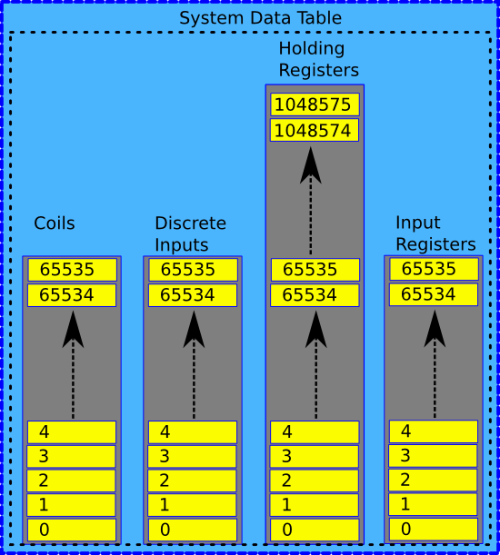

MBLogic
for an open world in automation
MBLogic
for an open world in automation
Help - Expanded Register Map
Overview
The holding registers have an expanded memory map which extends beyond the limits of the Modbus protocol. Most sub-systems can access these exapanded addresses directly because they are not limited by Modbus protocol limitations. However, some protocols have limits which prevent larger addresses from being directly used while still maintaining compatibility with standards. The expanded register map contains a method of allowing some of these protocols to access the expanded map while maintaining compatibility with standards.
Expanded Map Sizes
The system data table uses Modbus conventions to allow for simpler configuration of communications. However, the system data table is not inherently limited by the Modbus protocol itself. The address limits are:
- Discrete inputs - 0 to 65,535
- Coils - 0 to 65,535
- Input Registers - 0 to 65,535
- Holding Registers - 0 to 1,048,575
The holding register map is larger due to user demand for an increased data table location for storing large amounts of register data. There is no equivalent demand for the other data areas, and the smaller sizes used there avoid using large amounts of RAM. However, even 65,536 data locations is far more than most applications would use.
It is recommended that you do not use expanded register map addresses unless you have a clear reason for doing so. The normal address space of 0 to 65,535 is more than adequate (by a large margin) in almost all applications.
Disabling the Expanded Register Map
The server support for expanded register maps is off by default. That is, unless you explicitly configure the expanded map factors, the server will not use the expanded maps and will ignore UIDs.
However, the expanded map address space is always present, and can be accessed directly by those systems that do not have address limitations. This includes the built-in Modbus/TCP clients. Since clients do not use the Modbus protocol to access internal memory they are not limited to 16 bit addresses when accessing the internal data table.
Supported Protocols
At present, only the Modbus/TCP server supports the expanded register map system. The MBRest web service protocol does not support it. The other sub-systems such as the HMI, soft logic, and system monitoring and control do not have address limits and can access the expanded map by simply using the actual address.
Offset Calculations
Expanded register map addresses are calculated using the following formula:
Register map address = (unit_ID - UID_offset) * UID_factor + request_address
A register map address offset table is calculated when the configuration is read into memory. Run time overhead consists of just an addition to calculate the address.
Addresses are calculated in a manner such that the highest configurable register map address offset will not be more than the maximum register address minus 65,535.
If the UID factor is large enough, there will not be enough register map addresses available to use all the available UIDs. In this case, any higher UID numbers are considered invalid. For example, if a UID factor of 65,535 was used, UIDs 0 to 15 would fit exactly in the available space, and any higher UIDs could not be used.
Error Handling
Because of the flexibility of the expanded register map addresses, it is possible for a client to request an address that is out of range or is not configured. These are treated as invalid addresses and an error will be returned to that effect (for Modbus, this is exception 2). These errors fall into the following classes:
- The message address plus the calculated offset exceed the maximum address in the server register map.
- The unit id is less than the UID offset.
- The unit id is greater than largest offset index that will fit in the available register map space.
Example Using Modbus/TCP Server Protocol
An example of this is the Modbus/TCP server protocol. The addresses transmitted in Modbus messages are 16 bit integers, which limits them to the range from 0 to 65,535.

However, Modbus/TCP also includes a "unit ID" (UID) parameter which is an 8 bit (0 to 255) value. This is normally not used, and the Modbus/TCP server would simply ignore it (it is normally used in Ethernet to serial gateways, to bridge RS-485 or RS-232 systems to Ethernet).
By using the UID as an address offset, the addresses in server requests can be offset by any arbitrary amount. This allows the system to make use of the entire address map even if the individual clients themselves cannot.
Offsets are calculated based on an offset "factor" and a UID "offset". The offset will offset the UID downwards, to allow lower numbered UIDs to be excluded. The resulting offset UID value is them multiplied by the factor and then added to the address in the request message to obtain the data table address.
For example, assume the configured offset was 0, and the factor was 10,000. If a message arrives with a UID of 0 and a request to read the value at data table address 50, the system will perform the following calculation: (0 - 0) * 10,000 + 50 = 50. The resulting address is unchanged. However, if the UID is 10, the address will be (10 - 0) * 10,000 + 50 = 100,050. Notice that this address is well outside of the normal limits of a 16 bit address range.
If the UID offset was 1, then the previous example would work as follows: (10 - 1) * 10,000 + 50 = 90,050.